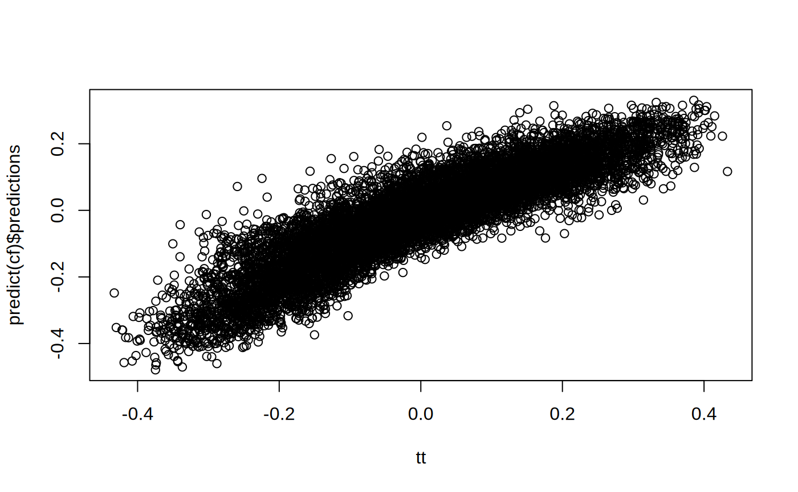
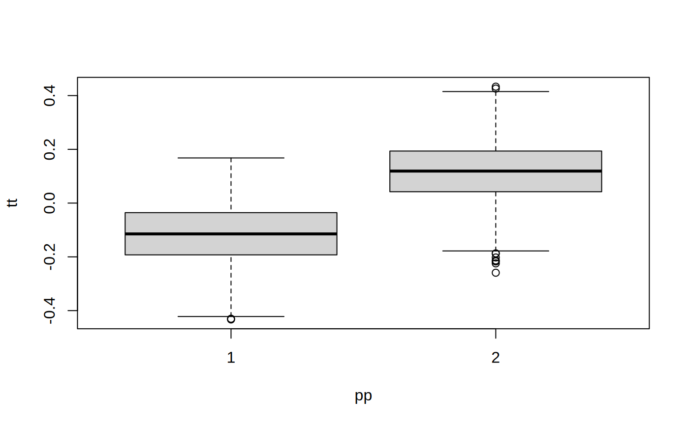
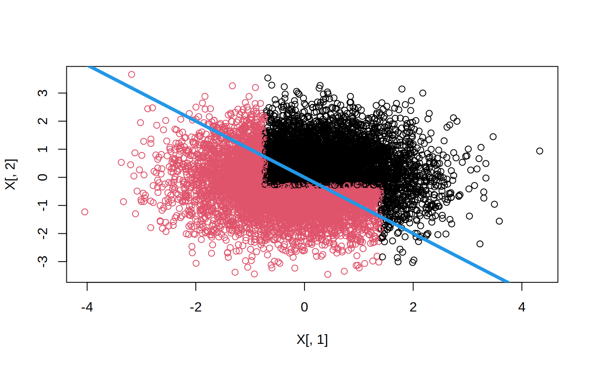
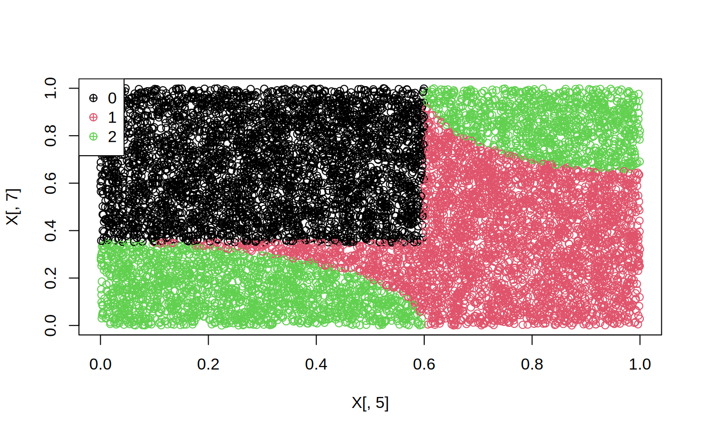
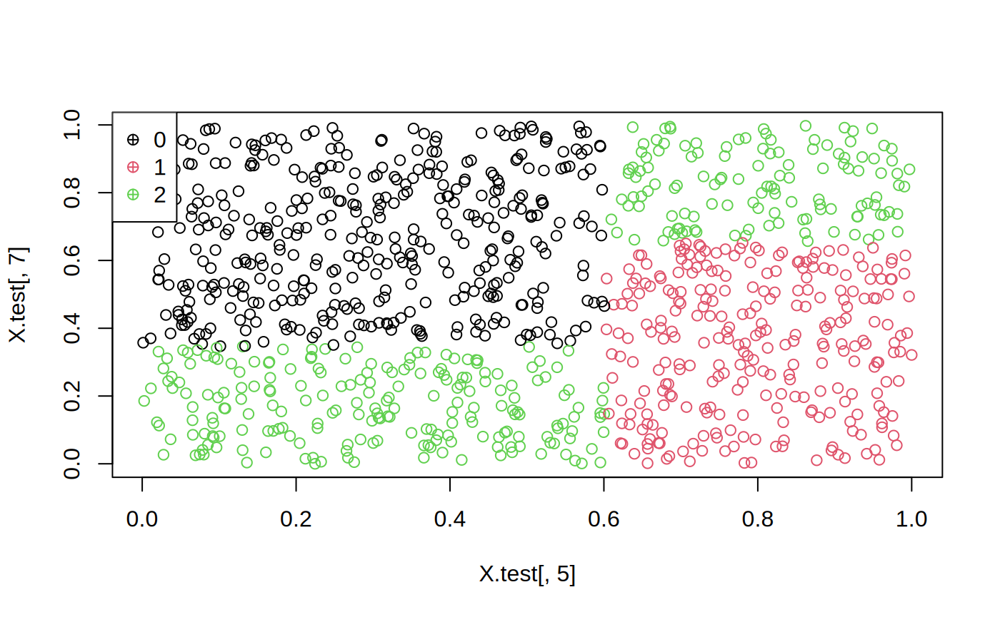

用 grf 估计个体化处置效应，再用精确树搜索找到「谁该给什么处置」的最优规则
本文简要介绍 policytree 包，示例取自 Zhou、Athey 与 Wager（2023）以及 Athey 与 Wager（2021）。最后一节讨论 policy_tree 的运行时间。
policytree 解决的是因果推断链条上的最后一环：前面你已经在 est（估计）阶段用 grf 得到了每个人的处置效应，接下来 policytree 负责把它变成一个可执行、可解释的决策规则——一棵树。树的每个叶子节点给出一个「行动」（action），落到该叶子的人就执行这个行动，使得全体期望收益最大。
grf 拟合森林（因果森林 / 多臂森林 / 工具变量森林）；double_robust_scores(forest) 把森林转成 Γ 矩阵；policy_tree(X, Γ, depth) 在 Γ 上做精确树搜索，得到全局最优的浅树。
加载所需的两个包：
library(policytree)
library(grf)先模拟一份数据：n = 10000 人、p = 10 个协变量，处置概率 ee 依赖 X3（这制造了需要校正的混淆），真实处置效应 tt 依赖 X1 与 X2（这是我们希望学到的异质性）。结果变量 Y = X3 + W·τ(X) + 噪声。
n <- 10000
p <- 10
X <- matrix(rnorm(n * p), n, p)
ee <- 1 / (1 + exp(X[, 3]))
tt <- 1 / (1 + exp((X[, 1] + X[, 2]) / 2)) - 0.5
W <- rbinom(n, 1, ee)
Y <- X[, 3] + W * tt + rnorm(n)
cf <- causal_forest(X, Y, W)
plot(tt, predict(cf)$predictions)最后一行把真实的处置效应 tt 画在横轴、森林预测的处置效应 画在纵轴。如果森林学得好，散点应大致沿对角线分布。

predict(cf)$predictions。点越贴近对角线，说明个体化效应估计越准接下来是 policytree 的关键两步。第一步把森林转成双重稳健得分矩阵 dr（每一行是一个人，两列分别对应「不处置」与「处置」的收益估计）；第二步在这个矩阵上搜索最优的深度 2 树。
dr <- double_robust_scores(cf)
tree <- policy_tree(X, dr, 2)
tree
#> policy_tree object
#> Tree depth: 2
#> Actions: 1: control 2: treated
#> Variable splits:
#> (1) split_variable: X2 split_value: -0.288329
#> (2) split_variable: X1 split_value: 1.40486
#> (4) * action: 2
#> (5) * action: 1
#> (3) split_variable: X1 split_value: -0.729217
#> (6) * action: 2
#> (7) * action: 1
pp <- predict(tree, X)
boxplot(tt ~ pp)* action 表示该叶子分配的动作：这里 action 2 = treated（处置），action 1 = control（对照）。1/(1+exp((X1+X2)/2)) − 0.5，当 X1 + X2 大时为正、小时为负。树用两步切分近似了这个「X1+X2 是否过阈值」的边界——这正是策略树该做的事。
pp <- predict(tree, X) 给出每个人被分配到的动作，下面按真实 τ 分组画箱线图：如果两个组的 τ 分布被清楚地分开，说明策略学到了真正的异质性。

boxplot(tt ~ pp) —— 被分配到 treated 的一组（右）真实 τ 明显更高，分配到 control 的一组（左）τ 更低，说明规则把人分对了再画一棵树的可视化版本，以及在 X1–X2 平面上查看策略给出的区域划分：
plot(tree)plot(X[, 1], X[, 2], col = pp)
abline(0, -1, lwd = 4, col = 4)plot(tree) 会弹出一个交互式树形图（htmlwidget），在 R 里运行能看到节点级的图形，本页无法渲染它的交互效果，建议自己跑一遍。col = pp 表示策略给这个人分配的动作。由于真实规则近似是 X1 + X2 超过某个常数，即 X2 ≈ −X1 + c，所以再叠一条截距 0、斜率 −1 的参考线 abline(0, -1)——它正好是理论上的决策边界走向，用来核验树学到的分界线方向是否正确。

下面的例子取自 Zhou、Athey 与 Wager 文中 6.4.1 节的三行动数据生成过程。这次不是「治不治」，而是三个可选行动里选哪个。
n <- 10000
p <- 10
data <- gen_data_mapl(n, p)
head(data.frame(data)[1:6])
#> action Y X.1 X.2 X.3 X.4
#> 1 1 2.6284326 0.67222112 0.1911761 0.8306201 0.04823820
#> 2 2 -0.4104820 0.06268746 0.5293111 0.9005144 0.17141539
#> 3 0 2.5760171 0.96091759 0.2426804 0.8510604 0.81590389
#> 4 1 6.4251811 0.28812068 -0.5097512 0.2848444 0.26683712
#> 5 1 -0.7418237 0.24016147 0.9975204 0.5635440 0.29509120
#> 6 2 -0.1215063 0.12274854 0.8569016 0.4839027 0.09840055
X <- data$X
Y <- data$Y
W <- as.factor(data$action)
multi.forest <- multi_arm_causal_forest(X, Y, W)
# tau.hats:
head(predict(multi.forest)$predictions[,,])
#> 1 - 0 2 - 0
#> [1,] -0.9412435 -2.0769712
#> [2,] 0.1277605 -0.4066057
#> [3,] 1.5617834 2.6202100
#> [4,] 1.4144960 1.8842886
#> [5,] -0.9125272 -1.9914204
#> [6,] -0.8652425 -1.9773135
# Each region with optimal action
region.pp <- data$region + 1
plot(X[, 5], X[, 7], col = region.pp)
leg <- sort(unique(region.pp))
legend("topleft", legend = leg - 1, col = leg, pch = 10)multi_arm_causal_forest 拟合。predict() 给出的是相对于基准臂的效应：列 1 - 0 是行动 1 相对行动 0 的效应，2 - 0 是行动 2 相对行动 0。第 1 行为负，说明对这个人来说，转向行动 1 或 2 都不如留在行动 0。data$region），每个区域有一个最优行动；最后三行把这个「真实的最优区域」画出来，作为后面学习结果的对照基准。这里画的是第 5 与第 7 个特征，因为这个 DGP 的最优行动主要由这两维决定。

用交叉拟合的增广逆概率加权学习（CAIPWL），配最优深度 2 的树：
Gamma.matrix <- double_robust_scores(multi.forest)
head(Gamma.matrix)
#> 0 1 2
#> [1,] 2.9332872 3.061184 0.8563160
#> [2,] 1.9659081 2.093669 -6.6971155
#> [3,] 8.4867605 1.576607 2.6350340
#> [4,] 0.1158075 11.451911 2.0000960
#> [5,] 2.9328387 -2.818131 0.9414183
#> [6,] 2.8653836 2.000141 -3.4826409
train <- sample(1:n, 9000)
opt.tree <- policy_tree(X[train, ], Gamma.matrix[train, ], depth = 2)
opt.tree
#> policy_tree object
#> Tree depth: 2
#> Actions: 1: 0 2: 1 3: 2
#> Variable splits:
#> (1) split_variable: X5 split_value: 0.601712
#> (2) split_variable: X7 split_value: 0.346662
#> (4) * action: 3
#> (5) * action: 1
#> (3) split_variable: X7 split_value: 0.65207
#> (6) * action: 2
#> (7) * action: 3
plot(opt.tree)double_robust_scores(multi.forest) 输出一个 n × 3 矩阵：第 i 行表示该个体在三个行动下的收益估计。例如第 4 个人在行动 1 下的得分高达 11.45，说明把行动 1 分配给他收益最大。policy_tree 在这些得分上搜索使总收益最大的深度 2 树。树根切 X5、两侧再各自切 X7——正好对应数据生成时起决定作用的第 5、第 7 个特征，也就是说规则学对了地方。
把学到的策略用在没参与训练的 1000 人上：
X.test <- X[-train, ]
pp <- predict(opt.tree, X.test)
head(pp)
#> [1] 3 3 1 1 2 2
plot(X.test[, 5], X.test[, 7], col = pp)
leg <- sort(unique(pp))
legend("topleft", legend = leg - 1, col = leg, pch = 10)predict() 返回的是动作的序号（1、2、3），而动作的标签是 0、1、2，所以画图时图例用 leg - 1 还原成真实行动编号。把这张图与前面的图 4（真实最优区域）叠在一起看，两者形状应当高度吻合。

下面的例子取自 Wager 与 Athey（2021）第 5.2 节。与前两例的关键差别：这里处置本身与未观测混淆相关，需要用工具变量 Z 来识别效应。
n <- 500
data <- gen_data_epl(n, type = "continuous")
head(data.frame(data))[1:6]
#> W Z tau Y X.1 X.2
#> 1 0 1 -0.50000000 3.4662060 -0.13701966 -1.59064506
#> 2 1 1 -0.07788149 0.5532977 -0.84836207 0.84423702
#> 3 0 0 0.17925500 1.4832753 1.02471100 0.33379899
#> 4 0 1 -0.50000000 1.1881457 -0.04921944 -0.85043640
#> 5 1 1 0.09894633 3.1677820 0.32794872 0.86994393
#> 6 0 1 -0.45727715 -0.6397086 -0.79551953 0.08544569
iv.forest <- instrumental_forest(X = data$X, Y = data$Y, W = data$W, Z = data$Z)
gamma <- double_robust_scores(iv.forest)
head(gamma)
#> control treated
#> [1,] -2.0284396 2.0284396
#> [2,] -0.9653677 0.9653677
#> [3,] 0.4410783 -0.4410783
#> [4,] -0.8767864 0.8767864
#> [5,] -3.1760816 3.1760816
#> [6,] 4.0984997 -4.0984997gamma 两列互为相反数，是因为在 IV 设定下，双重稳健得分被构造为「τ̂(X) 乘以 ±½」的形式：一个人的τ̂ 越大，分配 treated 的收益相对越高。符号本身就编码了「该治还是不该治」的方向。这也意味着对这个矩阵跑 policy_tree，等价于直接对 τ̂(X) 的符号做最优分组。
接着求解放式 (2) 所定义的深度 2 最优树：
train <- sample(1:400)
tree <- policy_tree(data$X[train, ], gamma[train, ])
tree
#> policy_tree object
#> Tree depth: 2
#> Actions: 1: control 2: treated
#> Variable splits:
#> (1) split_variable: X4 split_value: 0.209562
#> (2) split_variable: X1 split_value: 0.503502
#> (4) * action: 1
#> (5) * action: 2
#> (3) split_variable: X1 split_value: -0.389985
#> (6) * action: 2
#> (7) * action: 1在留出数据上评估这个策略：
piX <- predict(tree, data$X[-train, ]) - 1
head(piX)
#> [1] 1 1 1 1 1 0
reward.policy <- mean((2 * piX - 1) * data$tau[-train])
reward.policy
#> [1] 0.1624301predict() 返回 1/2，减 1 后变成 0/1 的策略指示 π(X)；2 * piX - 1 把它映射到 −1/+1，正好可与真实 τ 相乘：策略给对了人，τ 与被选中同号，乘积为正；给错了则为负。对所有留出样本取平均，得到的 0.162 就是这条政策的平均收益。作为对照，若完全随机分配，这一期望值约为 0。
精确树搜索的目标是：在中等规模的数据上找到浅层（通常深度 2 或 3）的全局最优树形策略。其摊还运行时间为 O(p^k · n^k · (log n + d) + p·n·log n)，其中 p 是特征数、n 是观测数、d 是处置（行动）数、k ≥ 1 是树的深度。由于这个表达式里有指数项，精确树搜索无法扩展到任意规模的数据上。
举例来说，深度为 2 的树，运行时间随观测数平方增长：样本量翻倍，耗时会变成四倍。这里的 n 指的是互不相同的观测个数——因此当特征取值离散时可以获得很大加速（如果全部是二值特征，运行时间相对 n 近似线性）。所以，把取值过于稠密的连续特征向下取整或重新编码到较低的基数是有好处的；可选参数 split.step 就是在模拟这种效果，而取整／重新编码则允许更细粒度的控制。
下表给出若干示例问题的运行时间，作为参考基准：
| depth | n（连续特征） | features | actions | split.step | time |
|---|---|---|---|---|---|
| 2 | 1000 | 30 | 20 | 1 | 1.5 min |
| 2 | 1000 | 30 | 20 | 10 | 7 sec |
| 2 | 10 000 | 30 | 20 | 1 | 3 hrs |
| 2 | 10 000 | 30 | 20 | 10 | 14 min |
| 2 | 10 000 | 30 | 20 | 1，但用 round(X, 2) | 8 min |
| 2 | 100 000 | 30 | 20 | 10 | 50 hrs |
| 2 | 100 000 | 30 | 20 | 1，但用 round(X, 2) | 6.3 hrs |
| 2 | 100 000 | 60 | 20 | 1，但用 round(X, 2) | 25 hrs |
| 2 | 100 000 | 30 | 3 | 10 | 7.4 hrs |
split.step 从 1 提到 10，耗时从 3 小时降到 14 分钟；把连续特征 round(X, 2) 降基数，能进一步降到 8 分钟——这两个操作都不改变问题本身，只是降低特征的取值基数。反之，样本量放大到 100 000，耗时立刻升到数十小时量级。所以要在大样本上做精确搜索，先想清楚三件事：离散化、特征筛选、以及是否真的需要深度 3。
前一节说明：在非常大的 N 上生长出深度 ≥ 3 的全局最优树是不可行的。但请注意，如果对连续协变量做适当离散化、并做特征筛选，生长深度 2 的精确树是可行的。
于是我们可以用一种「混合」（hybrid）方法，在保留深度 2 摊还运行时间的同时长出更深的树：形成切分时，向前多看一层深度 2 的子树。这个启发式结合了「完全贪心」与「完全最优」两种做法的优点——因为看得更远，变量之间潜在的交互作用被纳入了考量，同时又保持了可行的伸缩性。该功能由 hybrid_policy_tree 提供。
用上面的数据集拟合一棵精确的深度 3 树几乎要花 10 分钟，相比之下混合方法的耗时如下：
system.time(htree <- hybrid_policy_tree(data$X[train, ], gamma[train, ], depth = 3, search.depth = 2))
#> user system elapsed
#> 0.165 0.000 0.166
htree
#> policy_tree object
#> Tree depth: 3
#> Actions: 1: control 2: treated
#> Variable splits:
#> (1) split_variable: X4 split_value: 0.209562
#> (2) split_variable: X7 split_value: -0.692727
#> (4) split_variable: X3 split_value: 0.816282
#> (8) * action: 1
#> (9) * action: 2
#> (5) split_variable: X1 split_value: 0.247063
#> (10) * action: 1
#> (11) * action: 2
#> (3) split_variable: X3 split_value: -0.0218932
#> (6) split_variable: X3 split_value: -0.708715
#> (12) * action: 2
#> (13) * action: 1
#> (7) split_variable: X1 split_value: -0.418971
#> (14) * action: 2
#> (15) * action: 1depth = 3 是最终树的深度，search.depth = 2 表示每次考虑一个切分时，会向前评估深度 2 的最优子树，用它的收益来决定这一刀切在哪。这样每层只付「深度 2 精确搜索」的代价，却得到了更深的树：上例中整棵树 0.166 秒就出来了，而同样数据跑精确深度 3 树几乎需要 10 分钟。代价是不再保证全局最优。
| 函数 | 作用 |
|---|---|
double_robust_scores(forest) | 把 grf 森林（因果 / 多臂 / 工具变量）转成 Γ 得分矩阵，行是个体、列是行动 |
policy_tree(X, Gamma, depth) | 在 Γ 上做精确树搜索，返回全局最优的固定深度策略树 |
hybrid_policy_tree(X, Gamma, depth, search.depth) | 混合搜索：以 search.depth 层向前看批的方式生长更深的树，速度更快但不保证全局最优 |
predict(tree, Xnew) | 对新样本给出所属叶子的行动序号（1 起算，需按需减 1 还原标签） |
plot(tree) | 交互式树形图（htmlwidget），在 RStudio Viewer 中查看 |
gen_data_epl(n, type) | 生成高效策略学习示例数据；type = "continuous" 时含工具变量 Z |
gen_data_mapl(n, p) | 生成多行动策略学习示例数据，含 action、Y、X、region |